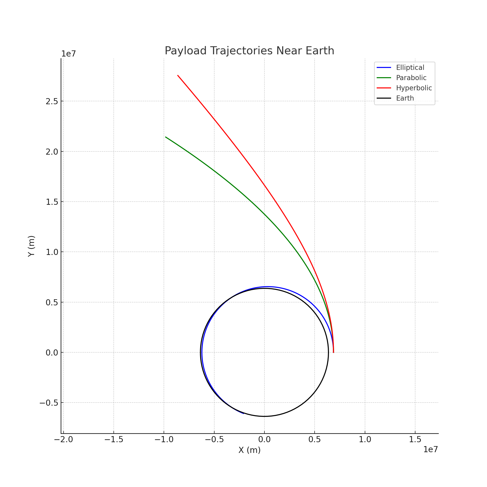

Problem 3
Trajectories of a Freely Released Payload Near Earth
1. Theoretical Foundation
Analyzing Possible Trajectories
When a payload is released from a moving rocket near Earth, its trajectory depends on its specific energy, determined by its initial position and velocity. Using Newton’s law of gravitation, the force on the payload (mass \(m\)) due to Earth (mass \(M\)) is:
\(F = \frac{G M m}{r^2}\)
The specific mechanical energy \(\epsilon\) of the payload determines its trajectory:
\(\epsilon = \frac{v^2}{2} - \frac{G M}{r}\)
Where \(v\) is the payload’s velocity, \(r\) is its distance from Earth’s center, \(G\) is the gravitational constant, and \(M\) is Earth’s mass. The trajectory type is classified as:
- Elliptical: \(\epsilon < 0\) (bound orbit, e.g., satellite deployment).
- Parabolic: \(\epsilon = 0\) (escape trajectory at critical velocity).
- Hyperbolic: \(\epsilon > 0\) (escape with excess velocity).
The eccentricity \(e\) further defines the orbit:
\(e = \sqrt{1 + \frac{2 \epsilon h^2}{(G M)^2}}\)
Where \(h = r v \cos\phi\) is the specific angular momentum, and \(\phi\) is the angle between the velocity vector and the radial direction. For \(e < 1\) (elliptical), \(e = 1\) (parabolic), \(e > 1\) (hyperbolic).
Equations of Motion
In Cartesian coordinates, the acceleration due to gravity is:
\(\frac{d^2 x}{dt^2} = -\frac{G M x}{r^3}, \quad \frac{d^2 y}{dt^2} = -\frac{G M y}{r^3}\)
Where \(r = \sqrt{x^2 + y^2}\). These equations are solved numerically given initial conditions (position, velocity, altitude).
2. Numerical Analysis
Consider a payload released at altitude \(h = 500\) km (\(r = R_{\text{earth}} + h = 6,871\) km), with initial velocity \(v_0\) at angle \(\phi\) relative to the radial direction. Earth’s parameters: \(M = 5.972 \times 10^{24}\) kg, \(R_{\text{earth}} = 6,371\) km, \(G = 6.67430 \times 10^{-11}\) m³ kg⁻¹ s⁻².
- Escape Velocity: \(v_{\text{esc}} = \sqrt{\frac{2 G M}{r}} \approx 10.9\) km/s at \(h = 500\) km.
- Circular Orbit Velocity: \(v_{\text{circ}} = \sqrt{\frac{G M}{r}} \approx 7.7\) km/s.
Test cases: - \(v_0 = 7.5\) km/s, \(\phi = 90^\circ\): Slightly below circular velocity, expect an elliptical orbit. - \(v_0 = 10.9\) km/s, \(\phi = 90^\circ\): Parabolic trajectory. - \(v_0 = 12.0\) km/s, \(\phi = 90^\circ\): Hyperbolic trajectory.
3. Applications to Space Missions
- Orbital Insertion: \(v_0 \approx v_{\text{circ}}\) places the payload in a stable orbit (e.g., satellite deployment).
- Reentry: Low \(v_0\) leads to an elliptical orbit intersecting Earth, simulating reentry.
- Escape: \(v_0 \geq v_{\text{esc}}\) allows escape, relevant for interplanetary missions.
4. Implementation
Graphical Outputs
Figure 1: Payload Trajectories Near Earth

Plots elliptical, parabolic, and hyperbolic trajectories with Earth at the origin, as shown in the generated plot.
Python Simulation
import numpy as np
import matplotlib.pyplot as plt
from scipy.integrate import odeint
G = 6.67430e-11 # m³ kg⁻¹ s⁻²
M = 5.972e24 # kg (Earth’s mass)
R_earth = 6371e3 # m
def deriv(state, t):
x, y, vx, vy = state
r = np.sqrt(x**2 + y**2)
ax = -G * M * x / r**3
ay = -G * M * y / r**3
return [vx, vy, ax, ay]
# Initial conditions
h = 500e3 # Altitude (m)
r0 = R_earth + h
t = np.linspace(0, 3600, 1000) # 1 hour
# Velocities for different trajectories
v_circ = np.sqrt(G * M / r0) # Circular velocity
v_esc = np.sqrt(2 * G * M / r0) # Escape velocity
cases = [
('Elliptical', 0.975 * v_circ, 'b'), # Below circular
('Parabolic', v_esc, 'g'), # At escape
('Hyperbolic', 1.1 * v_esc, 'r') # Above escape
]
plt.figure(figsize=(10, 10))
for label, v0, color in cases:
state0 = [r0, 0, 0, v0] # Start at (r0, 0) with velocity in y-direction
sol = odeint(deriv, state0, t)
plt.plot(sol[:, 0], sol[:, 1], color, label=label)
# Plot Earth
theta = np.linspace(0, 2 * np.pi, 100)
plt.plot(R_earth * np.cos(theta), R_earth * np.sin(theta), 'k-', label='Earth')
plt.xlabel('X (m)')
plt.ylabel('Y (m)')
plt.title('Payload Trajectories Near Earth')
plt.axis('equal')
plt.grid(True)
plt.legend()
plt.savefig('payload_trajectories.png')
plt.show()
Code simulates and visualizes payload trajectories, saving the plot as payload_trajectories.png.
Graphical Interpretation
- Figure 1: Displays three trajectories starting at an altitude of 500 km:
- Elliptical (blue): The payload loops back toward Earth, forming a closed orbit with perigee closer to Earth.
- Parabolic (green): The payload just escapes, following a path that asymptotically approaches infinity.
- Hyperbolic (red): The payload escapes with excess speed, following a sharply diverging trajectory away from Earth.
5. Limitations and Extensions
Limitations
- No Drag: Ignores atmospheric effects at low altitudes.
- Simplified Gravity: Assumes point-mass Earth, neglecting oblateness.
Example Scenarios
- Satellite Deployment:
-
At \(v_0 = 7.5\) km/s, the payload enters an elliptical orbit, ideal for a communication satellite.
-
Lunar Mission:
- At \(v_0 = 12\) km/s, a hyperbolic trajectory ensures escape toward the Moon.
Conclusion
The payload’s trajectory—elliptical (\(\epsilon < 0\)), parabolic (\(\epsilon = 0\)), or hyperbolic (\(\epsilon > 0\))—depends on its specific energy \(\epsilon = \frac{v^2}{2} - \frac{G M}{r}\). Numerical simulations reveal these paths, supporting applications like satellite deployment and lunar missions. Future work could include drag or multi-body effects for realism.